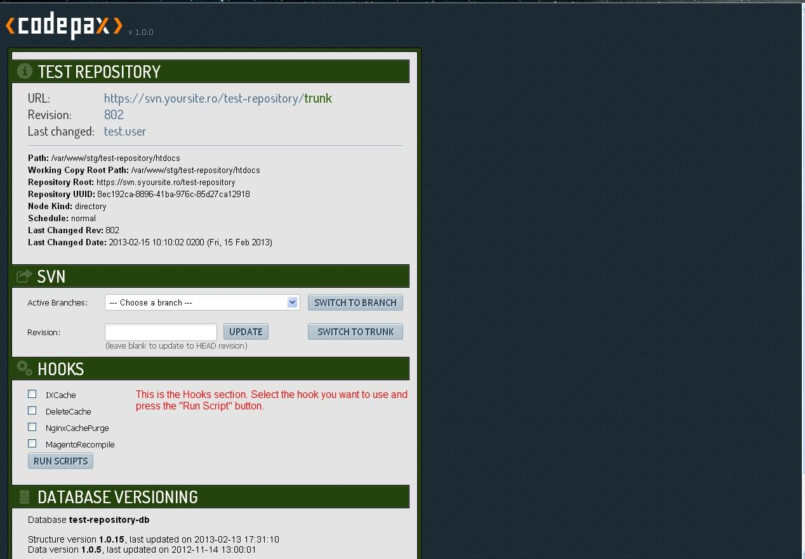

CodePax - Hooks
In order to allow on-demand scripts execution within Codepax, a basic hook system was set to place.
Basically when the Hooks are activated(by setting the "USE_HOOKS" constant to "true") a Hooks section will appear on the interface and all the found hooks will be listed there.

How to use hooks
The hooks must be placed under "/hooks/" directory which is relative to Codepax directory structure
- every hook must exist within a directory, let's say "SampleHook"
- the hook directory must contain at least the hook file named "Handler.php", with the class name, in this case "SampleHook_Handler.php"
- the hook class must implement the "CodePax_Hooks_Interface"
- you can place other files too under hook directory